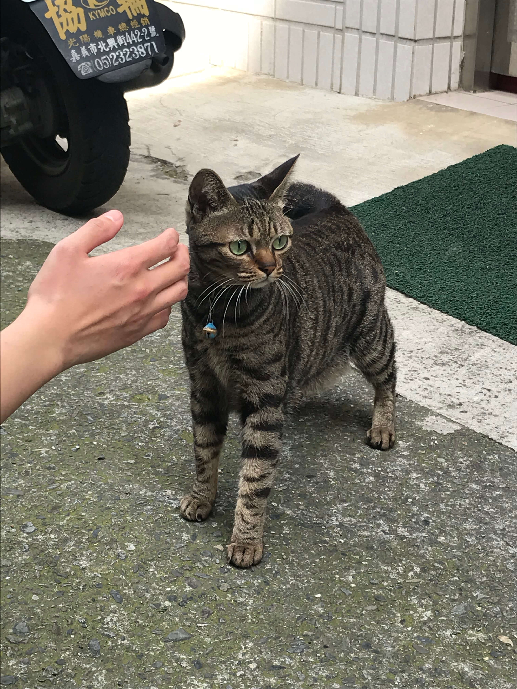

貓咪奇遇記
只要路上遇到貓咪我都會盡全力的去給他摸摸，拍拍他們，記錄他們那可愛的臉。
2018/02/16回到嘉義過年，遇到了一隻可愛的虎斑貓

2018/12/09堂哥家的小貓咪。
 2018/04/09與朋友在高雄的咖啡廳遇到的一隻母貓，只記得那天好熱啊，還有店員很漂亮。
2018/04/09與朋友在高雄的咖啡廳遇到的一隻母貓，只記得那天好熱啊，還有店員很漂亮。

 2018/04/12在台北的街頭遇到了一隻很可愛熱情又黏人的橘貓，反觀台北人的個性，真諷刺，好啦給你放三張版面。
2018/04/12在台北的街頭遇到了一隻很可愛熱情又黏人的橘貓，反觀台北人的個性，真諷刺，好啦給你放三張版面。


2018/04/23朋友家的小黑貓，養了好幾年了是隻老貓。
 2018/12/09高雄路上的橘貓。
2018/12/09高雄路上的橘貓。
 2018/05/16高雄果貿社區裡的三花貓，一直討摸。
2018/05/16高雄果貿社區裡的三花貓，一直討摸。

 2018/10/24台南大學裡的一隻黑貓，非常的兇，很難親近。
2018/10/24台南大學裡的一隻黑貓，非常的兇，很難親近。